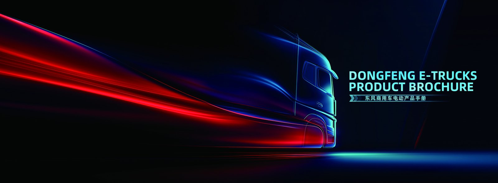

Peru's mining corridors, Lima distribution centres and port logistics are starting to spec the electric truck as a serious alternative to diesel, and 2026 is the year the import path became predictable. An electric truck cuts fuel spend and urban emissions at the same time, which matters in a country where fuel import costs and air-quality targets are both political priorities. This guide walks a first-time Peruvian importer through tariffs, homologation, shipping and the real landed cost of a China-built EV truck such as the TZ3V electric dump truck.
The most common mistake is to compare only the FOB price. The true cost of owning an imported electric truck in Peru includes freight, insurance, import duty, VAT, homologation fees and local delivery. Buyers who model all of these before signing avoid nasty surprises at the port of Callao.
Peru applies a most-favoured-nation import duty to fully built electric trucks, and the government has kept the rate favourable for zero-emission vehicles to encourage adoption. On top of duty, the importer pays general sales tax (IGV) on the customs value plus duty. The table below is a planning estimate for a medium electric truck with a FOB price of $70,000.
| Cost component | Rate / Amount | Estimated USD |
|---|---|---|
| FOB price (China) | fixed | $70,000 |
| Ocean freight and insurance | approx 8 percent FOB | $5,600 |
| Customs value | FOB + freight + insurance | $75,600 |
| Import duty | 6 percent | $4,536 |
| IGV (VAT) | 18 percent of taxable base | $14,424 |
| Homologation and inspection | fixed fees | $2,200 |
| Local transport to Lima yard | fixed | $900 |
| Total landed cost | $97,660 |
These numbers are planning estimates and should be confirmed with a Peruvian customs broker, but they show that landed cost runs roughly 35 to 40 percent above FOB. Heavy electric trucks in the $100k to $180k FOB band land closer to $140k to $250k all-in, depending on specific duty treatment and whether the buyer imports as a company with a tax credit position.
Before an electric truck can be registered in Peru, it must pass homologation through the competent technical body. The process verifies that the vehicle meets local safety, lighting, braking and emissions-free standards. For an EV truck the emissions step is essentially a formality, but the electrical safety certification and the battery documentation are scrutinised.
Most electric trucks from China reach Callao by Ro-Ro (roll-on, roll-off) vessel because the truck is driven on and off under its own power, avoiding crane lifts that can stress the chassis. Container shipping is an option for buyers who want to bundle spares, but it costs more per unit and requires a flat-rack or open-top for taller bodies. Transit from Shanghai to Callao is typically 32 to 40 days, plus a week of customs clearance.
Because the TZ3V is a working dump truck rather than a passenger vehicle, Ro-Ro is the cheaper and faster route for single-unit or small-fleet orders. For a ten-unit mining order, a mix of Ro-Ro and containerised spares balances cost and lead time.
A clean import file prevents demurrage charges at the port. The core documents for an electric truck entering Peru are the commercial invoice, the packing list, the bill of lading, the Certificate of Origin, the insurance certificate and the homologation submission. Shaanxi Fenghan Trading Co., Ltd. prepares the export side, but the Peruvian importer must supply a valid RUC and a customs agent of record.
Buyers exploring regional demand should also review the Peru electric truck market to understand where the first charging corridors and service points are appearing, since resale and uptime both depend on local support density.
The payback case for an imported EV truck in Peru rests on fuel and maintenance savings. A diesel dump truck burning roughly 35 litres per 100 km at local diesel prices costs far more per kilometre than an electric truck drawing grid power at an industrial rate. Over a 250 km per day mining or quarry cycle, the energy saving alone can reach $18,000 to $25,000 per year, which recovers the tariff and freight premium in well under three years.
| Metric | Electric Truck | Diesel Comparable |
|---|---|---|
| Energy cost per km | $0.18 | $0.52 |
| Annual energy cost (250 km/day) | $16,200 | $46,800 |
| Annual maintenance | $3,500 | $7,000 |
| Annual saving | $34,100 | |
Shaanxi Fenghan Trading Co., Ltd. handles export documentation, Ro-Ro booking and the battery warranty paperwork that Peruvian homologation requires. For a first import, the company recommends starting with one electric truck to validate the route and the charging setup, then scaling the order once the customs brokerage relationship is established. With the 2026 tariff and certification path now clear, Peruvian buyers can plan fleet electrification with confidence rather than guesswork.
Peru's duty mix ranges from city delivery vans to 49-tonne mining tractors, so the right EV truck depends on the application. Light cargo units in the $45k to $70k FOB band suit Lima distribution, while medium special vehicles at $60k to $95k fit municipal and plantation work. Heavy dump, tractor and mixer trucks in the $100k to $180k band serve mining and construction. Matching the class to the route avoids both under-specification and wasted battery capacity, and it keeps the import duty base appropriate to the use.
An imported electric truck is only as useful as the charger beside it. Most Peruvian buyers install a 120 kW or 240 kW DC unit at their yard, which fully charges an overnight parked truck and offers a midday top-up. For mining sites far from the grid, Shaanxi Fenghan Trading Co., Ltd. can advise on solar-assisted charging so the TZ3V electric dump truck runs on site-generated power. Planning the charger before the truck arrives prevents the most common post-import delay and protects the payback timeline that justified the purchase.
The CATL 8-year or 4,500-cycle battery warranty is a strong resale argument in Peru, where used-truck buyers worry about battery health. An electric truck sold at year four with four warranty years remaining commands a clear premium over an undocumented unit. Importers who keep full service records and the original homologation file protect that value, and Shaanxi Fenghan Trading Co., Ltd. supplies the paperwork needed to prove battery condition at trade-in, which keeps fleet finance costs lower across the ownership period and improves the next import's terms.
Ready to electrify your fleet? Contact Shaanxi Fenghan Trading — authorized Dongfeng EV truck exporter. WhatsApp: +86 153 1943 1311 | Email: sales@fenghan-trade.com | dongfengevtrucks.com
🌐 Our Network: Fenghan Trade (SAGMOTO/SHACMAN Truck Export) · 4x2 6x4 tractor truck prime mover